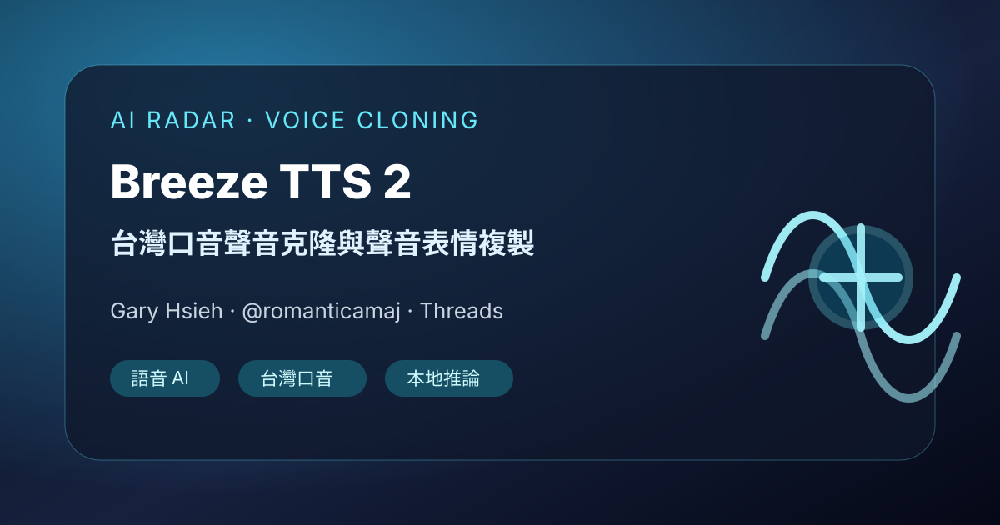

AI 雷達｜Breeze TTS 2 台灣口音聲音克隆：適合試作個人聲音分身

一句話摘要
Gary Hsieh（@romanticamaj）分享 Breeze TTS 2 做聲音克隆的體驗：台灣口音與聲音表情複製相當像，並邀請有興趣的人一起試玩。留言串中也提到廣東話支援可能不是重點、Qwen／Fish 等工具可能可支援其他語言，以及 Windows 環境可安裝。
原文重點
Threads 作者 Gary Hsieh（@romanticamaj）寫道：
> OK，我的數位墓碑的聲音準備好了。Breeze TTS 2 做聲音克隆，是少數台灣口音跟聲音表情都複製超像的。有人要一起來玩玩嗎？
這則貼文的核心價值在於「台灣口音」與「聲音表情」兩個面向。許多 TTS 或 voice clone 工具在標準華語、英文或日文表現不錯，但碰到台灣華語的語氣、尾音、節奏與口頭感時容易失真；Breeze TTS 2／BreezyVoice 系列的賣點正好在台灣華語適配。
補充脈絡
公開搜尋結果顯示，BreezyVoice 是針對台灣華語調整的 voice-cloning text-to-speech 系統，並支援以注音輔助控制發音；它部分衍生自 CosyVoice，也是 Breeze2 family 的一部分。相關生態裡也有 ComfyUI-Breeze-TTS-2，標示可用參考音訊與逐字稿進行 voice clone，或用文字描述做 voice design／voice direction。
留言串可見訊息
- 有人詢問是否支援廣東話，作者回覆自己主要測台灣口音，廣東話可能不是重點。
- 作者提到印象中 Qwen、Fish 等工具可能支援更多語言。
- 有留言詢問是否可在 Windows 環境安裝，作者回覆 Yes。
- 大量留言以「++」「+1」「需要」表示想取得或試用，顯示這類台灣口音 voice clone 工具在社群中有需求。
值得追蹤的原因
- 可作為台灣華語 TTS／聲音克隆工具評估清單的一員。
- 適合未來做課程旁白、個人品牌聲音分身、AI 助教聲音、Podcast 原型或本地化語音互動實驗。
- 若要導入工作流，需優先檢查授權、模型權重、顯卡需求、推論速度、參考音訊品質、逐字稿準確度與聲音授權同意。
- 「數位墓碑」雖是玩笑語氣，但也提醒聲音克隆涉及身分、同意與死後數位分身倫理，實作時應保留明確授權與使用邊界。
初步行動建議
- 先收藏 Breeze TTS 2／BreezyVoice 相關 repo 與 Hugging Face 頁面。
- 若要試作，準備乾淨、無背景噪音、語氣自然的台灣華語參考音訊，以及完全對應的逐字稿。
- 測試時用同一段文本比較：原聲、Breeze TTS 2、其他中文 TTS／voice clone 工具，評估口音、情緒、停頓與可懂度。
原始連結
Threads：
https://www.threads.com/@romanticamaj/post/DcsiXibkwxo
BreezyVoice GitHub：
https://github.com/mtkresearch/BreezyVoice
ComfyUI-Breeze-TTS-2：
https://github.com/Saganaki22/ComfyUI-Breeze-TTS-2
Breeze TTS 2 Hugging Face：